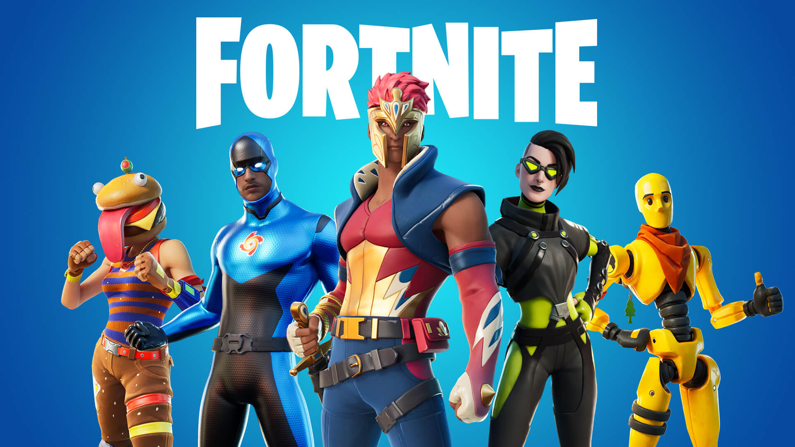
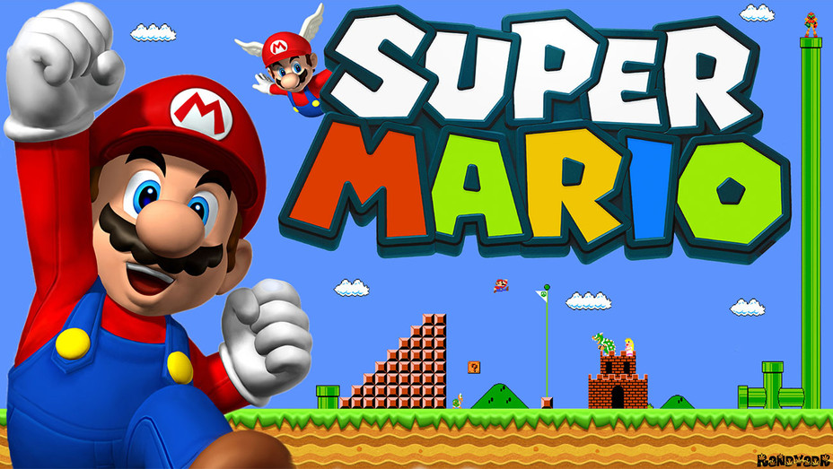
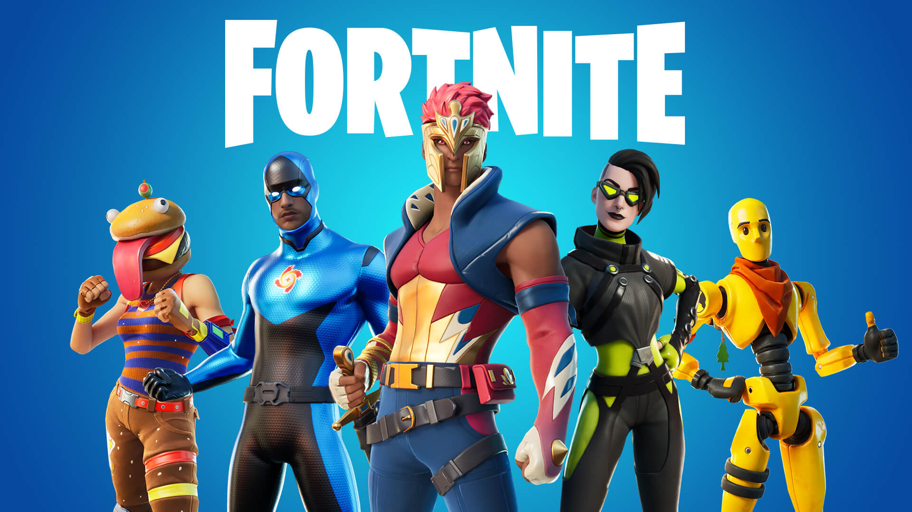
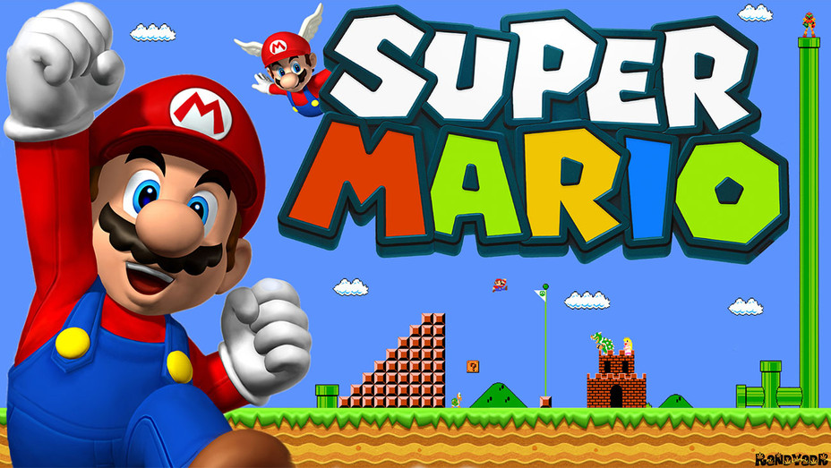

Featured Games
 



Doom Eternal is a first-person shooter game developed by id Software and published by Bethesda Softworks. The sequel to Doom (2016), and the seventh game in the Doom series, it was released for PlayStation 4, Stadia, Windows, and Xbox One on March 20, 2020, with a port for Nintendo Switch released on December 8, 2020, and versions for PlayStation 5 and Xbox Series X/S released on June 29, 2021.
Set some time after the events of the 2016 game, the story follows the Doom Slayer once again, on a mission to end Hell's consumption of Earth and foil the alien Maykrs' plans to exterminate humanity. Along with the single-player campaign, a multiplayer mode, Battlemode, was introduced. In this mode, players can either play as the Doom Slayer or as a demon, and fight until either the Doom Slayer defeats the demons, or vice versa. A horde mode was added in October 2021. The Ancient Gods, a two-part standalone campaign DLC set after the events of the main game, was released between October 2020 and March 2021. Doom Eternal received positive reviews from critics, who praised its campaign, graphics, level design, soundtrack, and combat mechanics, though some disliked the increased focus on storytelling and its platforming sections. Doom Eternal received five nominations at The Game Awards for 2020, including Game of the Year and Best Action Game.
Fortnite is an online video game developed by Epic Games and released in 2017. It is available in three distinct game mode versions that otherwise share the same general gameplay and game engine: Fortnite Battle Royale, a free-to-play battle royale game in which up to 100 players fight to be the last person standing; Fortnite: Save the World, a cooperative hybrid tower defense-shooter and survival game in which up to four players fight off zombie-like creatures and defend objects with traps and fortifications they can build; and Fortnite Creative, in which players are given complete freedom to create worlds and battle arenas.
The most popular game mode is their Fortnite Battle Royal. Fortnite Battle Royale is a player-versus-player game for up to 100 players, allowing one to play alone, in a duo, or in a squad (usually consisting of three or four players). Weaponless players airdrop from a "Battle Bus" that crosses the game's map. When they land, they must scavenge for weapons, items, resources, and even vehicles while trying to stay alive and to attack and eliminate other players. Over the course of a round, the safe area of the map shrinks down in size due to an incoming toxic storm; players outside that threshold take damage and can be eliminated if they fail to quickly evacuate. This forces remaining players into tighter spaces and encourages player encounters. The last player, duo, or squad remaining is the winner.
Super Mario (also known as Super Mario Bros. and Mario) is a platform game series created by Nintendo starring their mascot, Mario. It is the central series of the greater Mario franchise. At least one Super Mario game has been released for every major Nintendo video game console. There are more than 20 games in the series.
The Super Mario games are set primarily in the fictional Mushroom Kingdom, typically with Mario as the player character. He is usually joined by his brother, Luigi, and often by other members of the Mario cast. As platform games, they involve the player character running and jumping across platforms and atop enemies in themed levels. The games have simple plots, typically with Mario and Luigi rescuing the kidnapped Princess Peach from the primary antagonist, Bowser. The first game in the series, Super Mario Bros., released for the Nintendo Entertainment System (NES) in 1985, established the series' core gameplay concepts and elements. These include a multitude of power-ups and items that give the character special powers such as fireball-throwing and size-changing. The Super Mario series is part of the greater Mario franchise, which includes other video game genres and media such as film, television, printed media, and merchandise. More than 380 million copies of Super Mario games have been sold worldwide, making it the fifth-bestselling video game series, behind the larger Mario franchise, the puzzle series Tetris, the series Pokémon video games, and first-person shooter series Call of Duty.